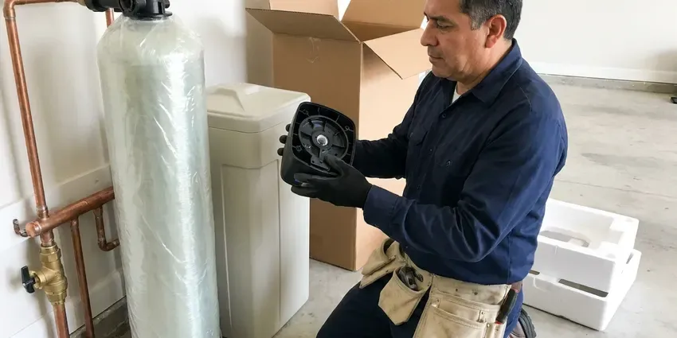
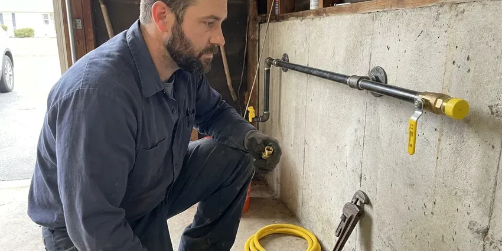

Plumbing Installation in Brooklyn Park, MN
Homes and small businesses across Brooklyn Park, MN call CNV Plumbing for new plumbing installs, from a single fixture to a whole-house repipe.
- Pressure Tested Lines
- Licensed and Insured
- Local Brooklyn Park Plumbers
- No-Cost Written Estimates
Plumbing Installation in Brooklyn Park, MN, Done by the Book.
Tell us what you are installing and we will size it and price it.
Plumbing Installation for Homes and Businesses in Brooklyn Park, MN
CNV Plumbing installs plumbing across Brooklyn Park, MN, from a 40 gallon water heater in the garage to a full PEX repipe through the attic. Before we price anything, we check the water, the gas meter and the electrical panel. Then we size the job. Each job is built to pass inspection the first time.
Our expertise includes:
- Expansion tank installs on closed systems
- Sump pump and sewage ejector installs
- Gas line and water service line replacement

Additional Plumbing Installation Services in Brooklyn Park, MN
We install water heaters, pumps, lines, and fixtures across Brooklyn Park, MN with careful, permitted work that passes inspection the first time.


Water Softener Installation in Brooklyn Park


Customers
Why Choose CNV Plumbing for Plumbing Installation in Brooklyn Park, MN?
The quote you get is written, and it lists the heater model, the fittings, the permit fee and haul-away as separate lines. Should we find a surprise behind the drywall, we call you before spending another dollar of your money. No surprise invoice.
- Clear Pricing, One written quote covering equipment, labor, permit and haul-away.
- Certified Plumbers, Every installer is licensed and carries insurance.
- Code Compliance, Installs are built to the adopted plumbing and gas code, with inspection where required.
Citywide Coverage
Garage water heater swaps and whole-home repipes both come through our dispatch for every part of Brooklyn Park. Our scheduler works installs around your calendar, including early starts for people who need to be out the door for work by eight. We also book some Saturdays.
Experienced Team
Water heater and gas line installs are weekly work for our plumbers. They know how local houses are usually laid out, and they set equipment where the next service call will be simple. Shutoffs face the door.
Safety-First Approach
Every installation follows Minnesota and Brooklyn Park plumbing code, and we walk the job ourselves before calling the city for the final inspection. Fast is fine. Safe and legal comes first.
Trusted Certified Brooklyn Park Plumbing Services Professionals
At CNV Plumbing, we take pride in licensed, certified plumbing services throughout Brooklyn Park, MN. Those papers on the wall mean something. Our plumbers hold recognized industry credentials, and they follow strict safety and quality rules on every repair, installation and maintenance call we run.
Call Us Now PHCC Plumbing Contractor Recognition
PHCC Plumbing Contractor Recognition Better Business Bureau (BBB) Accreditation
Better Business Bureau (BBB) Accreditation Angi Certified Pro
Angi Certified Pro ISO 9001 Quality Management Certification
ISO 9001 Quality Management CertificationWhat We Install in Brooklyn Park, MN
PEX Pipe Installation and Repiping in Brooklyn Park
Pinhole leaks in copper keep coming back once the pipe walls start to thin. A PEX repipe ends that cycle. We run either a manifold with home runs to each fixture, which balances pressure, or a trunk-and-branch layout when the walls make home runs impractical. Access holes are kept small and patched, or left square and clean for your drywall contractor.

Water Softener Installation in Brooklyn Park, MN
Private wells are widespread, so homeowners around Brooklyn Park should test for hardness and iron before sizing a treatment system. Scale shows up first as white crust on faucet aerators and a rumbling water heater. A hardness test at the kitchen tap, in grains per gallon, tells us whether a salt-based softener or a salt-free conditioner fits your usage. The bypass valve matters. With it, the softener can be serviced while the house still has water.
Gas Line Installation in Brooklyn Park, MN
A new range or an outdoor kitchen all start with the same math: total BTU load and the length of the run. From there we size the pipe, choose between black iron and CSST, and dig the trench for any buried section. Each joint is checked with leak solution. Then the whole line holds pressure on a gauge before the inspector sees it.
Tankless Water Heater Installation in Brooklyn Park, MN
Navien and Rinnai tankless units hang on a wall and free up the floor space a tank used to take. Most gas units need upsized gas piping and a new vent run in stainless or PVC. Electric models need amperage. We size by gallons per minute and the temperature rise from your incoming water. Water heaters and boilers work hard through the heating season, which adds wear compared to milder climates. Isolation valves go on every unit for descaling.
Whole-House Water Softener Installation in Brooklyn Park
Private wells are widespread, so homeowners around Brooklyn Park should test for hardness and iron before sizing a treatment system. Softener sizing comes down to hardness times daily gallons, which tells us how many grains the resin has to remove between regenerations. A unit sized too small regenerates constantly and wastes salt. We set the drain line with an air gap. Then we program the regeneration schedule to your water and run a test cycle.
Gas Line Installation for New Appliances in Brooklyn Park, MN
Water heaters, ranges, dryers, fireplaces and pool heaters all pull from the same gas service. Each branch is sized from the total BTU load and the run length so the last appliance on the line is not starved. Every new line is pressure tested. A load that outgrows the meter needs an upgrade, which we coordinate with the gas company.
Backflow Preventer Installation in Brooklyn Park
Irrigation systems and fire sprinkler lines are the usual reasons a home needs a backflow preventer. It keeps fertilizer-laced lawn water from being pulled back into the drinking supply when a main break or hydrant flush drops pressure. Type matters. We match the assembly to the hazard and the local rule, then test it before we leave.

Sump Pump and Sewage Ejector Pump Installation in Brooklyn Park
Basements and crawl spaces that take on water need a sump pump, and fixtures below the sewer line need an ejector. They are different pumps for different water, and one cannot stand in for the other. We size before we sell. We match pump capacity to how fast the pit fills, put the pump on its own circuit and run the discharge with a check valve.
Local Plumbing Installation Near Me in Brooklyn Park, MN
Typing "plumbing installation near me" in Brooklyn Park turns up a page of ads and call centers. CNV Plumbing is a local outfit with trucks in Minnesota, and our plumbers know the housing stock, the inspectors and the common problems in older neighborhoods. A real person here picks up. We can usually get out to quote within a day or two.
Local code and inspection schedules shape how we plan your install. Each install is planned around your floor plan and the next service call, not just around how fast it goes in. We put access panels where you can actually reach them. Every valve gets a tag.
CNV Plumbing at a Glance
- Licensed and insured plumbers serving Brooklyn Park, MN
- 24/7 emergency service with same-day scheduling
- Clear written estimates, no hidden fees
- 4.8-star rated by 501+ Minnesota customers
Brooklyn Park Map
Brooklyn Park Information
- Population
- 82,017
- Area codes
- 763/952/612
- Service area
- Brooklyn Park and communities within 40 miles
- Nearby
- Coon Rapids, Maple Grove, Blaine, Plymouth
A water heater set without an expansion tank, or a gas line one size too small, comes back to bite you in Brooklyn Park, MN. Private wells are widespread, so homeowners around Brooklyn Park should test for hardness and iron before sizing a treatment system. Water lines are buried deep for that reason, but pipes in exterior walls, crawlspaces and unheated spaces still freeze during cold snaps.
Expert Services
Reach out to CNV Plumbing for honest, reliable plumbing from people who know the trade in Brooklyn Park, MN.
Our Specialized Plumbing Services in Brooklyn Park, MN
At CNV Plumbing, you get every kind of plumbing service from one company across Brooklyn Park, MN. We go from leak detection all the way to full system installations, for homes and commercial buildings, and we do it quickly at a fair price. Explore our core services below:


From Quote to Inspection: Plumbing Installs in Brooklyn Park, MN
Our installation process is simple and predictable.
Request a Quote
Call (612) 712-9569 or fill out the online form. Let us know what is going in and where.
On-Site Assessment
We visit your Brooklyn Park home, measure and confirm the requirements. No work starts until you have a written estimate.
Professional Installation
Our certified team installs the equipment to code and manufacturer specs. We test every connection before we leave.
Frequently Asked Questions About Plumbing Installation in Brooklyn Park
Costs track the project. Plan on $1,600 to $3,500 for a tank heater, $1,500 to $4,000 for a softener, and $5,000 to $15,000 or more for a PEX repipe, scaled to the size of the house. Permits are included in our quotes.
Rusty water, leaks, frequent repairs and climbing utility bills are the common ones. Once equipment hits 10 to 12 years, replacement is usually the better value.
Tank heaters cost less up front. Tankless units give continuous hot water and often last longer, but they need more gas or electrical capacity.
Yes, for most of it. In this area, a water heater swap, a new gas line or a repipe usually needs a permit, and the inspection covers venting, relief lines and pressure tests. We file it and meet the inspector.
A heater or softener install typically takes a few hours. Plan a day for a gas run or water line, and several days for a repipe.
PEX is cross-linked polyethylene tubing for water supply lines. It does not corrode, it tolerates a freeze better than copper, and it goes in faster since it bends where copper needs a fitting. It is a durable choice for Minnesota homes, with fewer fittings and fewer leak points. We mostly install PEX-A with expansion fittings.
Tank swaps take 2 to 4 hours. Tankless takes longer, often 4 to 8 hours, because of new venting and a larger gas line in most homes. We keep your hot water outage to the one day, and we tell you up front if the job will spill into a second.
Water on the basement floor after a hard rain answers it. White mineral streaks on block walls, constant dampness or past flooding usually mean a pump, more so on low ground with a high water table. Grading gets checked first. Better grading and longer downspouts can solve it without a pump.
What Our Customers Say About Our Plumbing Experts

Tyler J.
We bought a taller comfort height toilet for my dad, who just had knee surgery. The plumber pulled the old one, found the flange was cracked, and replaced it before setting the new bowl. Took about two hours.
Toilet Installation · Brooklyn Park, MN
Brian W.
I smelled gas behind the dryer and called right away. The plumber found a corroded flex connector, replaced it, and pressure tested the whole line before turning the gas back on. He let me watch the gauge hold steady for fifteen minutes.
Gas Line Repair · Plymouth, MN
Kevin O.
Before buying our house I paid for a sewer camera inspection. CNV Plumbing found a belly in the line that held standing water about forty feet from the cleanout. We used the video to get the sellers to fix it before closing.
Sewer Camera Inspection · Coon Rapids, MNMark T.
The floor drain in our office break room backed up every few weeks. The plumber ran a cable, then put a camera down and found roots at a joint about thirty feet out. Seeing it on the screen made the decision easy.
Drain Cleaning · Minneapolis, MNPaul B.
Our pit pump ran nonstop even in dry weather. The plumber found the check valve was stuck open, so the same water kept cycling back into the pit. New valve, new float switch, done in an hour. It runs quiet now.
Sump Pump · Coon Rapids, MNRobert G.
The camera showed a full break in our clay sewer line near the street. CNV Plumbing replaced it with a trenchless pipe burst, so the only digging was two small pits in the yard. They let us watch the footage before and after.
Sewer Line Replacement · Plymouth, MN